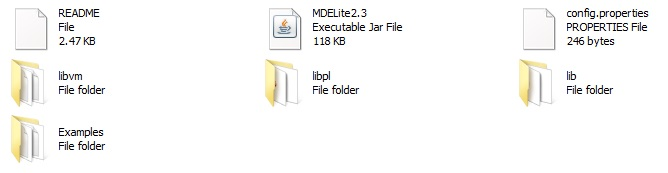
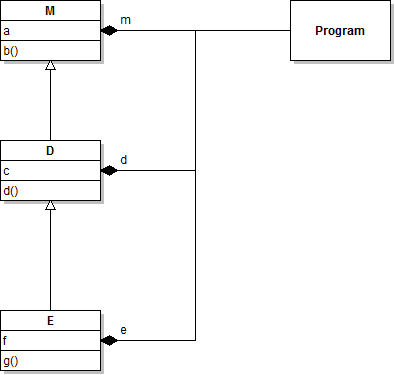
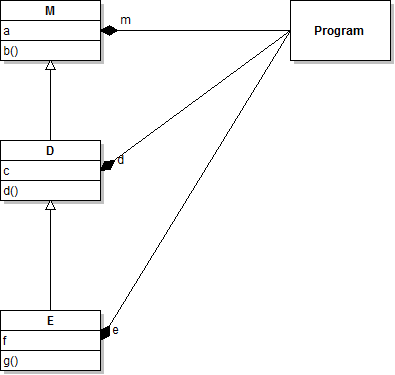

MDELite
Starters Guide (Version 2.3.0)
Don Batory, Eric Latimer,
Robert Berg, Eric Huneke, Amin Shali, Joyce Ho
July
2013
1. Installation
Unzip the MDELite*.zip
file into a directory. You should see:

Warning:
We have had problems on Windows platforms where paths to MDELite jar
files have spaces (e.g., "C:\Program Files"). Place MDELite
in a
directory whose path includes no spaces.
The README file should
direct you here. The contents of the other members are:
- MDELite2.3
-- the current MDELite jar file
- libvm
-- VM2T Prolog-to-text scripts
- libpl
-- a set of Prolog table definitions, conformance files, and
model-to-model transformations
- lib --
a set of jar files that are referenced by MDELite jar
- Examples --
some example files
- config.properties
-- a simple configuration file.
Your task is to:
- List all jar
files (MDELite*.jar, and lib/*) on your classpath.
- Install Java
(or better yet NetBeans).
- Install SWI Prolog.
- Next,
edit the config.properties file and assign variable SWI_PROLOG_LOCATION
the name of the bin directory in your SWI Prolog
installation.
- Verify that
you completed the last steps correctly by running:
> java CoreMDELite.SwiplInstalled
A
correct execution will print 2 lines: the absolute path to
the
directory which contains the MDELite*.jar file, and the next line a
friendly "MDELite Ready to Use!". If you don't get this
output,
then you have not correctly updated your classpath.
The current version of
MDELite supports yUML (which you can access on-line)
and Violet
whose Java executable you can download. MDELite was
originally
developed in Summer 2012 and supported UML Factory, a Chrome
application/plug-in. UML Factory is no longer available,
although
it and its transformations have not yet been removed from the MDELite
code base. (UML Factory will be replaced with some other
tool(s)
in the future). For now, you can translate yUML class
diagrams
into Violet class diagrams, and vice versa. I'm sure that
there
are bugs. What you can do is to report them to me (batory@cs.utexas.edu) and I'll try to fix them, but
no promises!.
2. Examples Directory
MDELite currently offers
two programs:
In the Examples directory,
you'll find the following files:
- bad.class.violet -- a
Violet file that defines a nonsensical class diagram
- good.class.violet -- a
Violet file that defines a well-formed class diagram
- good.yuml -- a yUML file
that defines a well-formed class diagram
- bad.yuml --
a yUML file that defines a nonsensical class diagram
bad.yuml is a correctly specified yuml class diagram, which makes no
semantic sense as it is a circular inheritance hierarchy.
To verify that it is a
nonsensical diagram, run:
> cd MDELite*/Examples
> java MDELite.Conform yuml bad
You'll get as output:
Exception in thread "main" java.lang.RuntimeException: Conformance Failure
look at script.txt and conformance errors in conform.txt
When
MDELite executes, it leaves a trail of files to document its execution
history, such as execution failures. These breadcrumb files
appear in the directory in which you run MDELite. The
thrown exception announces a conformance failure. The SWI
Prolog
command that was executed is in 'script.txt',
whose content is:
:-['tmpconform.sdb.pl'],tell('conform.txt'),run,told,halt.
meaning
that Prolog file "tmpconform.sdb.pl" was read in by swipl (the SWI
Prolog executable), its output
was redirected to file 'conform.txt',
the conformance tests were
executed (by 'run'), and the Prolog execution was halted. The
contents of 'conform.txt' tells us the error:
circular class hierarchy: abc
Namely: class abc
participates in a circular class hierarchy. The Prolog program
('tmpconform.sdb.pl')
is a concatenation of the file of prolog facts
that define the yUML diagram, the file of prolog rules that define the
metamodel constraints on what constitutes a reasonable class
definition. By double-clicking 'tmpconform.sdb.pl', you can
load this into SWI prolog, and you can run the test simply by typing
"run." So, when something goes wrong, there will be enough
breadcrumbs for you to determine the failure.
A similar class diagram was draw using Violet. And you can
verify that this diagram is nonsensical by running:
> java MDELite.Conform violet bad.class
The
Examples
directory gives you a couple of correct examples, namely
good.yuml and good.class.violet. (See if they conform).
You can also translate a
good yUML(Violet) file into its corresponding Violet (yUML) file by:
> java MDELite.Convert yuml violet good
> java MDELite.Convert violet yuml good.class
One
more example. You can also convert a Violet document into
itself.
In doing so, you'll see that the transformation loses
information. Use the Violet tool to view the
good.class.violet
file. You'll see the image:

You can translate this file into
prolog and then back again into a Violet XML file by running:
> java MDELite.Convert violet violet good.class
and
the file good.classeqv.violet is produced. (The 'eqv' was added to the
name so as not to override the original file). Its image is
below:

Notice that it is drawn a bit
differently as some of the graphics
information was lost during translation to/from Prolog. Both
diagrams are not syntactically equal, but they
are semantically
equivalent models.
You're On Your Own
You're now ready to use
MDELite by:
- creating
your own Violet diagrams (using the Violet tool) or writing your own
yUML specs (see the yUML web page for documentation). Please
note
that MDELite uses a sub-language of yUML class diagrams, whose grammar
is given below:
-
//
The Yuml grammar for class diagrams is essentially the following
//
(but note, Yuml is a bit more general)
YumlSpec
: Line+ ; // one or more lines
Line:
Box | Connection ;
Box :
'[' Class ']' ;
Connection
: Box [End1] [Role1] '-' [Role2] [End2] Box ;
End1 :
'<>' | '++' | '^' | '<' ;
End2 :
'<>' | '++' | '^' | '>' ;
Role1
: String ; // String that has no ']' chars
Class
:
String
// name only
| String '|'
String
// name and methods only
| String '|' String '|' String // name, field, and
methods
; |
- Ensuring that your
diagrams (specifications) conform to existing MDELite class diagram
constraints
- Translating
your diagrams from one representation into another.